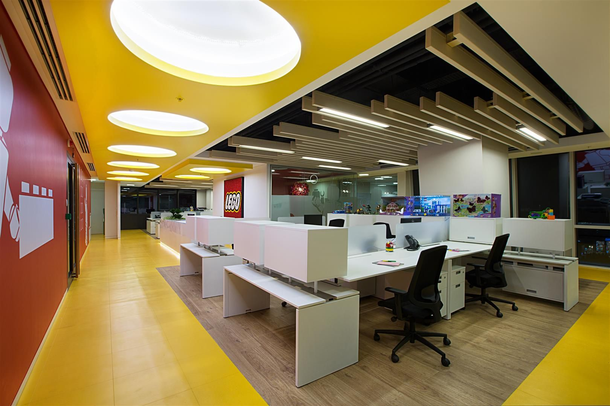

GENEL NİTELİKLER VE İŞ TANIMI
MeteWEB , 10 yılı geçen tecrübesi ile IT sektöründe özel sektör firmalarının bilişim sistemlerine outsource bilgi işlem sistem yönetimi servisleri vermekte, ağ-sunucu-sistem-bilgi güvenliği konusunda çözümler sağlamakta ve projeler yürütmektedir.
Bilgi Teknolojileri sektöründe 10 yıllık deneyimimizi paylaşabileceğimiz ve birlikte ilerleyebileceğimiz takım arkadaşları arıyoruz.
GENEL NİTELİKLER
Problemlere çözüm üretmeyi seven Analitik düşünebilme becerisine sahip Kendini geliştirmeye istekli ve zamanı etkin kullanabilen İletişim becerileri güçlü ve insan ilişkilerinde pozitif olabilen İyi düzeyde İngilizce anlama ve konuşma becerisine sahip
TEKNİK BECERİLER
Windows Server işletim sistemine hakim Sunucu platformları ve storage sistemleri hakkında iyi düzeyde bilgi sahibi Ağ anahtarı ve yönlendirici gibi aktif cihazların kurulum ve konfigürasyonunu yapabilecek düzeyde network bilgisine sahip Hyper-V ve Vmware sunucu sanallaştırma konularında bilgi sahibi Bilgi güvenliği konularına merakli ve kendini geliştirmeye istekli Açık kaynak kodlu sunucu platformları ve yazılımları konusunda ilgili ve öğrenmeye yatkın
İŞ TANIMI
Hizmet verilen kurumsal müşterilerde sunucu sistemlerinde,bilgisayar donanım ve yazılımlarında olabilecek problemleri çözmek ve kullanıcı desteği sağlamak Hizmet verilen kurumsal müşterilerin mevcut bilgi sistemlerine entegre edilecek yeni sistemlerin kurulumunda görev almak Yeni müşteri projelerinde sistem tasarımı ve analiz, kurulum ve konfigürasyon görevlerini gerçekleştirmek Yapılan çalışmaları bağlı olduğu yöneticiye raporlamak ve belgelendirmek Kurulan veya iyileştirilmesi gerçekleştirilen sistemler ile ilgili sistem yöneticilerinin ve kullanıcıların eğitimlerinin düzenlenmesinde görev almak Satış öncesi ve satış sonrası sistem destek faaliyetlerinde görev almak Farklı şehirlerde olabilecek problemlerde uzak bağlantı teknolojileri ve telefon desteği ile veya gerekmesi halinde yerinde destek vermek Sürekli olarak kendini geliştirmek üzere görev tanımıyla ilgili konularda araştırmalar yapmak, firma içi ve dışı eğitimlere katılım sağlamak.